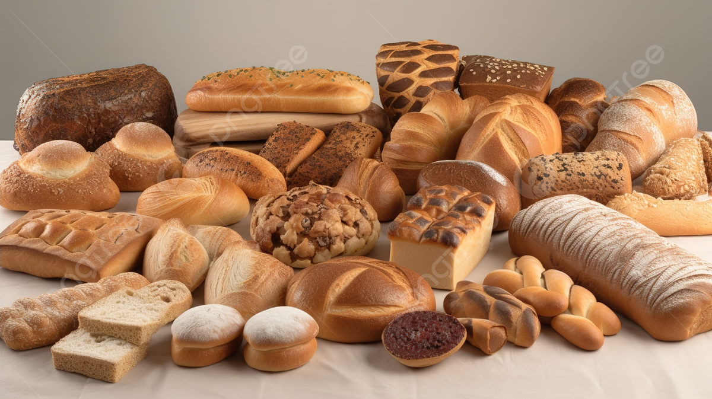

Bread

-
Carbohydrate Content: Bread varies widely in carb content; white
and whole-wheat breads typically have around 12-20 grams per slice,
while low-carb and “keto” breads contain 5 grams or less per slice.
-
Types: Whole grain and sprouted breads offer more fiber, which
can lower net carbs slightly, while refined white breads generally
provide fewer nutrients and more net carbs.